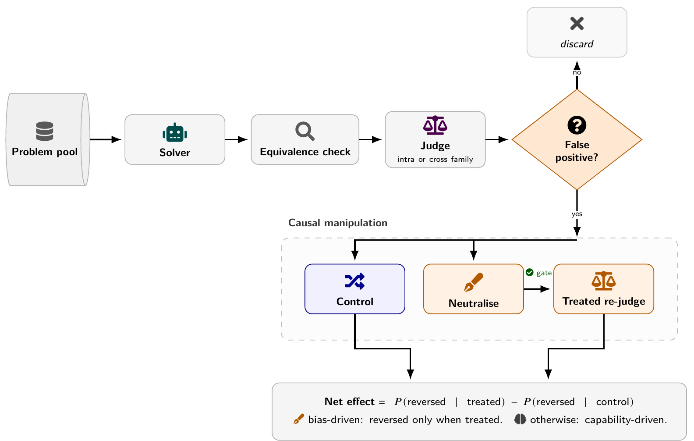
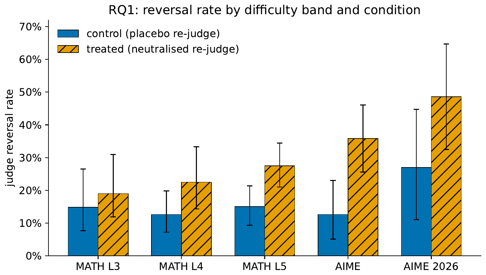
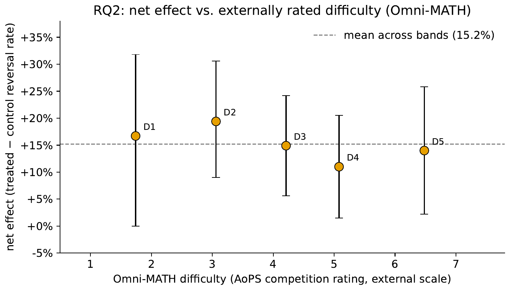

A causal test
A solver paired with a judge [1] is a common way to catch wrong answers. Earlier studies [2, 3] show that the judge fails more on harder problems and when it resembles the solver, but only as a correlation. The cause matters because the fixes cost orders of magnitude apart: a stronger judge model if it cannot see the error, a different verification prompt or answer format if presentation misleads it.
We collected 703 real false positives: wrong answers by Llama-3.3-70B [4] on MATH [5] and AIME problems that a Llama [4] or Qwen [6] judge accepted. Each one is judged again twice.

The control run measures how often a stochastic judge flips on its own. The treated run uses a rewrite that removes confident wording but keeps every step, value and the final answer, even when the answer is wrong. Whatever the treated run flips beyond the control is caused by presentation.
What presentation explains
The rewrite flips 11.2 points more accepted answers than resampling alone. Presentation is part of the failure, not all of it.
The effect looks larger on harder bands, but difficulty and benchmark were tangled together.

Does it grow with difficulty?
A second dataset built for this question, Omni-MATH [7] problems with an externally rated difficulty, shows no growth with difficulty. The apparent trend in the main study does not hold up.
A same-family judge also looked more easily fooled, but the pattern reversed for larger judges, so family and capability stay entangled. All results use one solver and math problems.

References
- L. Zheng et al. Judging LLM-as-a-judge with MT-Bench and Chatbot Arena. arXiv:2306.05685, 2023.
- Y. Zhou, A. Xu, Y. Zhou, J. Singh, J. Gui, S. Joty. Variation in verification: Understanding verification dynamics in large language models. ICLR, 2026. arXiv:2509.17995.
- J. Lu, R. Teehan, J. Jin, M. Ren. When does verification pay off? A closer look at LLMs as solution verifiers. arXiv:2512.02304, 2025.
- A. Grattafiori et al. The Llama 3 herd of models. arXiv:2407.21783, 2024.
- D. Hendrycks et al. Measuring mathematical problem solving with the MATH dataset. arXiv:2103.03874, 2021.
- Qwen Team. Qwen2.5 technical report. arXiv:2412.15115, 2024.
- B. Gao et al. Omni-MATH: A universal olympiad level mathematic benchmark for large language models. arXiv:2410.07985, 2024.